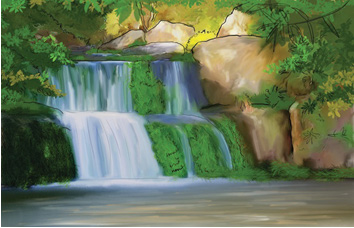
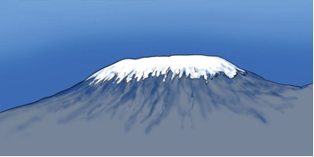

Activity 1.3
Study your surroundings, then create an artwork of your choice that shows how art manifests itself in nature and in human activities.


Study your surroundings, then create an artwork of your choice that shows how art manifests itself in nature and in human activities.